This is the memory of the system, and it comes with its own web GUI. It runs as
a container and serves a browser interface at the container's address — for example
http://localhost/ui. From there you manage the projects the agent knows about,
inspect what it has indexed, and watch what it is doing — all on infrastructure you control.
The Project Context runs as a container. Once it is up, open a browser on the same machine and
go to its address — the GUI is served under /ui:
http://localhost/ui.A project is a folder the agent is allowed to understand and work in. The start page of the GUI lists every project currently registered with the server.
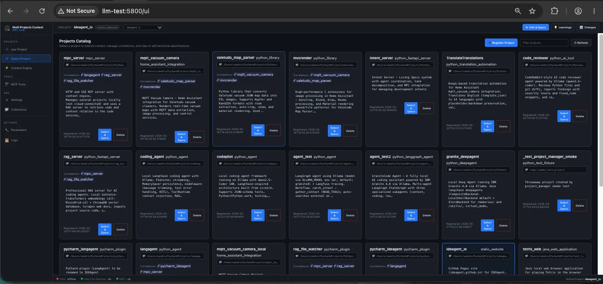
Pick the project you want to work with either by clicking its card or from the selection list.
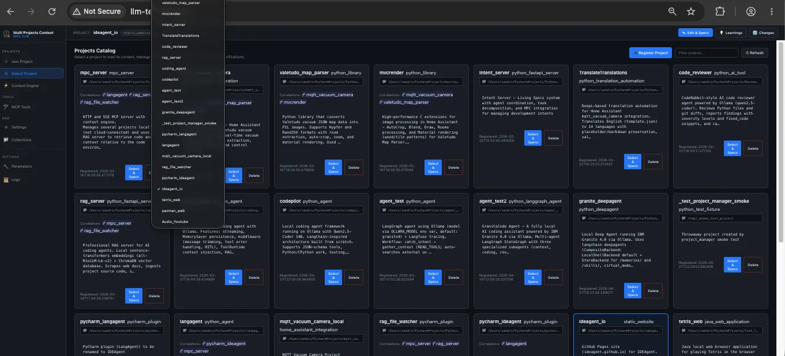
Registering a folder makes it part of the agent's memory. Along with the project itself you define its specs — a description of what the project is — which the agent reads as context before it works in that project.
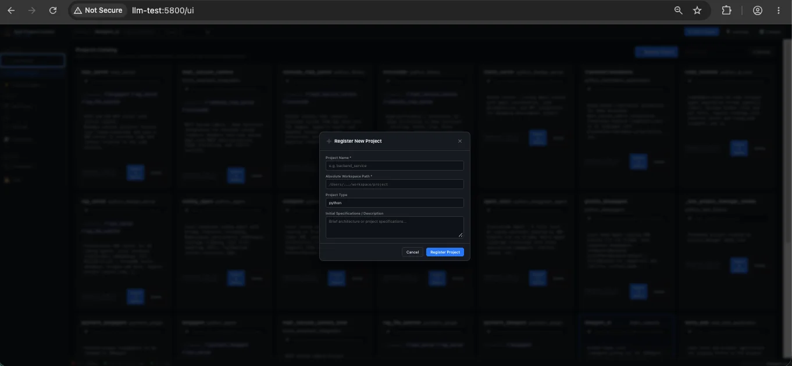
Everything you set at registration can be changed later. Editing a project lets you redefine:
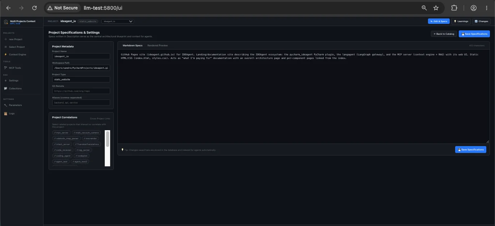
When one project is part of other projects — a library used by a backend, for example — you can correlate them. Correlations give the agents a map of the other places worth looking, so an agent working in one project knows which related projects may hold the rest of the answer, and which peers to coordinate with over ACP.
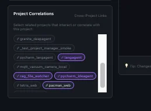
Learnings are the notes agents save about a project as they work — decisions, pitfalls, verified workflows. Search all recorded learnings by keyword and filter them by category.
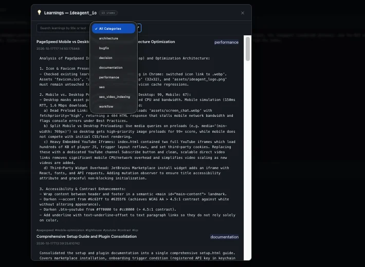
Every edit an agent records is kept as a change. The last 250 changes can be listed, filtered by category or searched by keyword — so you can see a project's recent history without opening Git.
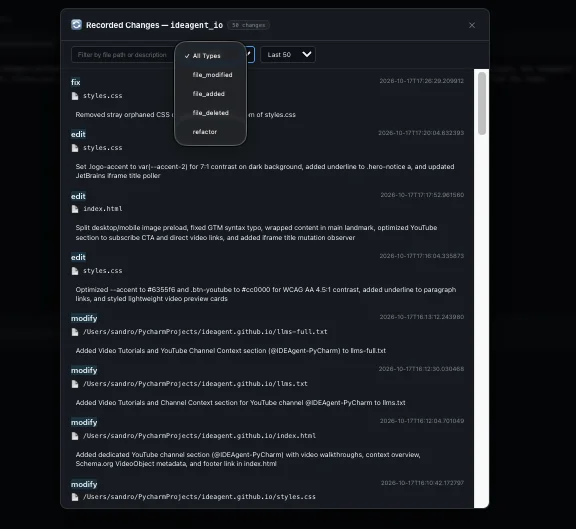
The Context Engine is what the agent consults first on every task — an indexed model of the project's structure rather than a blind file read. It knows the project's symbols (functions, classes, methods), where each one lives, how they relate, and which changes were recorded recently. Here you can run the same lookups the agent does — find a symbol or ask a question about the code — and see exactly what the agent would get back: the file, the line range and the relevant source excerpt.
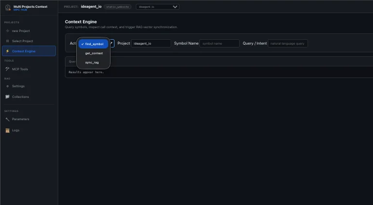
Retrieval is backed by a self-hosted RAG server. Your project's code is indexed into it with chunks built around whole symbols, so a search result is a complete function or class rather than an arbitrary range of lines. Edits are stored as before/after snapshots. On top of your own code, the RAG can hold external documentation, so the agent looks up the real docs for a framework instead of relying on what it remembers.
RAG → Settings opens RAG Sources & Configuration, an editor for the
RAG server's config/sources.yaml. This file lists the documentation sources the RAG
crawls on a schedule (every 6 hours by default).
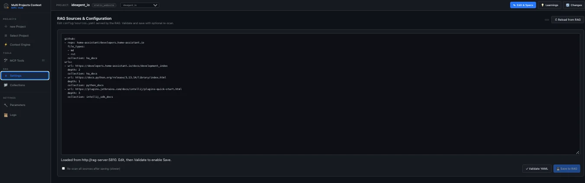
Only two top-level keys are accepted. If the file contains anything else, the RAG server rejects it:
github — a list of repositories to index:
repo (required) — the repository as owner/name, for example home-assistant/developers.home-assistant.io.file_types — the file extensions to pull from the repository. Default: md and py.collection — the collection the content is stored in. Default: github.urls — a list of web pages to crawl:
url (required) — the page the crawl starts from.depth — how many levels of links the crawler follows from that page. Default: 1. Each extra level can add many more pages, so raise it only for documentation sites where the useful content is a few clicks deep.collection — the collection the content is stored in. Default: web_docs.
Collection names are up to you. A collection is created the first time something is stored in it, so
grouping sources by topic (for example ha_docs, python_docs) keeps each set
of docs separate. A fresh install starts with an empty sources.yaml.
To change the sources:
RAG → Collections is in the menu but not live yet. It will list the collections and what each one holds.
Everything here is computed and stored on infrastructure you control: the full codebase stays in your RAG instance, and the agent retrieves the chunks and embeddings it needs to work. When you configure a hosted model, that retrieved context is what gets sent to it — which is why we recommend a fully local setup (with Ollama) when you want nothing to leave your environment at all.
Enable or disable each tool the MCP server exposes. Only enabled tools are shown to the agent when it first invokes the server through the Gateway — so you decide exactly which actions an agent can see and use.
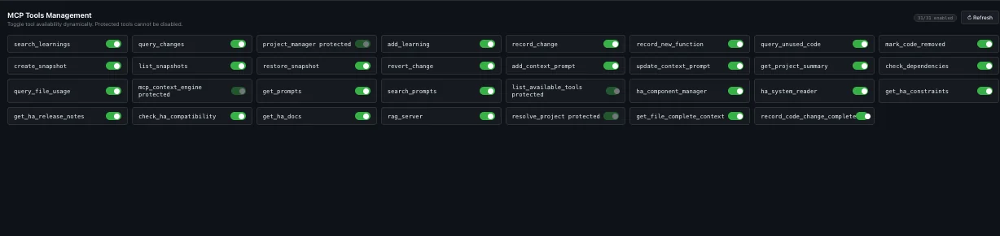
Under Settings → Parameters you set the server's environment. Values are saved to
settings.json in the persistent data volume and take precedence over environment
variables, which in turn override the built-in defaults. Restart the MCP container after saving
so every service picks up the new values.
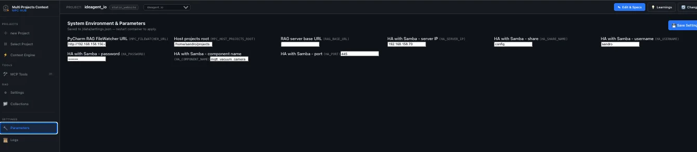
settings.json.MPC_FILEWATCHER_URL) — where the server notifies the file watcher after a recorded change, so the file is re-indexed right away. Normally the live watcher is found automatically; this is the fallback.MPC_HOST_PROJECTS_ROOT) — the folder on the host that holds your projects, mounted read-only into the container so the server can read and index them. Changing the mount itself means recreating the container.RAG_BASE_URL) — the RAG backend used for search, the Context Engine, ingestion and snapshots. If it's wrong, the Context Engine and semantic search stop working.config), username, password, component name and port (default 445) used by the Home Assistant tools to deploy, back up and read a custom component over SMB. The component name can be overridden per project.Secrets such as the Samba password are shown masked; leaving the mask in place keeps the stored value, so saving the form never wipes or exposes a secret.
An index is only useful if it matches the code on disk. The Project Context stays in sync with a companion file watcher that runs on each of your machines:
The Logs tab shows what the server is doing in real time — registrations, indexing activity and queries — so when something looks off, you can see why without leaving the browser.
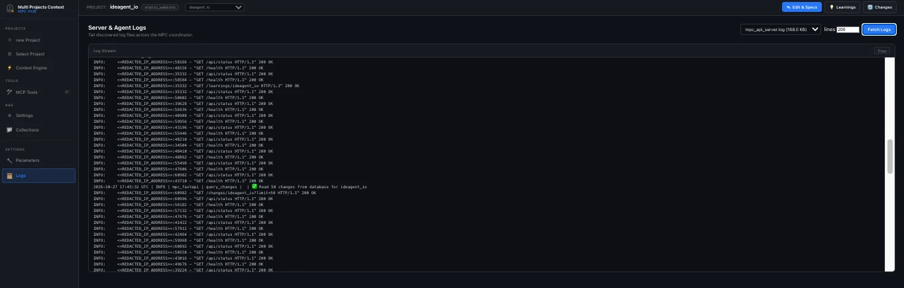
Turning code into a searchable index is the compute-heavy part, and it runs best with a GPU. IDEAgent runs on CUDA-capable NVIDIA machines and on boxes with shared-memory GPUs — laptops and Macs — but the two are not equal:
The RAG server uses vector databases and therefore embedding models. For speed and embedding quality, larger models are required. GPUs can batch embed 1,855 files in half or a quarter of the time of a CPU.
Choose the Docker image tag corresponding to your host hardware:
latestlatest-nvidialatest-amdFor complete instructions on connecting the RAG server to your IDE, follow the Setup Guide.
Indexing and storage stay on infrastructure you control: indexing runs on your own hardware, the collections live in a store you host, and retrieval returns only the small, relevant slices the agent needs. The file watcher may upload a changed file to the RAG server, and that server can be a different host from the editing machine — but both run inside your own infrastructure (for example, our container installed in your environment), so the full codebase is never transmitted to an external model provider — only the retrieved slices are sent, and only if you configure a hosted model. Paired with a local Ollama provider on the Gateway, no code or context leaves infrastructure you control at all.
Explore the overall system layout in the full architecture documentation →